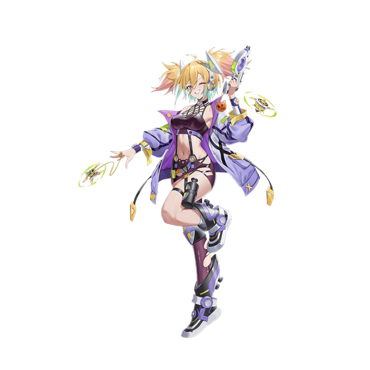

基本データ
- コスト
- 2.0
- 体力
- 未入力
- 赤ロック
- 27
- 動画
- 登録動画

Move Table
| 射撃 | 名称 | 弾数 | 威力 | 備考 |
|---|---|---|---|---|
| メイン射撃 | 挨拶射撃 | 7(2凸時9) | 210 | 発生・弾速の早いBR |
| サブ射撃 | 旋風独楽・オービット | 1 | 315 | 自身の周りに強制ダウンの独楽を展開 再入力すると独楽を高弾速で射出 |
| 後サブ射撃 | 旋風独楽・追従 | 2(3凸時3) | 180 | ゆっくり地走し相手に誘導する独楽を射出 メインキャンセル可能 |
| 後サブ格闘 | 行かないで〜 | - | 144/252 | 多段ヒットするアンカー。溜め撃ちで性能アップ |
| 格闘 | 名称 | 入力 | 弾数 | 威力 | 備考 |
|---|---|---|---|---|---|
| メイン格闘 | ストリート格闘術 | NNNN | - | 569 | 発生9F サブ射派生 |
| いってらっしゃい〜 | - | N→サブ射 | NN→サブ射 | ||
| NNN→サブ射 | - | - | 608～691 | 大きく引き離して打ち上げる。 サブ格派生 | |
| サービスだよ〜 | - | N→サブ格 | NN→サブ格 | ||
| NNN→サブ格 | - | - | 629～778 | 5凸で解禁。長押しでヒット数増加 | |
| 横格闘 | ストリート格闘術 | 横NNN | - | 589 | 発生10F サブ射派生 |
| いってらっしゃい〜 | - | 横→サブ射 | 横N→サブ射 横NN→サブ射 | ||
| 横NNN(7)→サブ射 | - | - | 592～745 | 大きく引き離して打ち上げる。 サブ格派生 | |
| サービスだよ〜 | - | 横→サブ格 | 横N→サブ格 横NN→サブ格 | ||
| 横NNN(7)→サブ格 | - | - | 623～800 | 5凸で解禁。長押しでヒット数増加 | |
| 前格闘 | ストリート旋風 | 前 | - | 356 | 発生6F。発生・判定共に強力な格闘 |
| Nサブ格闘 | サプライズ | Nサブ格 | - | 295 | 発生9F。突進格闘。ヒット時他の武装にキャンセル可能 |
| バーストアタック | 名称 | - | 威力 | ||
| バーストアタック | 渦流乱舞 | - | - | 1063/???/976/887 | 多段格闘系覚醒技 |